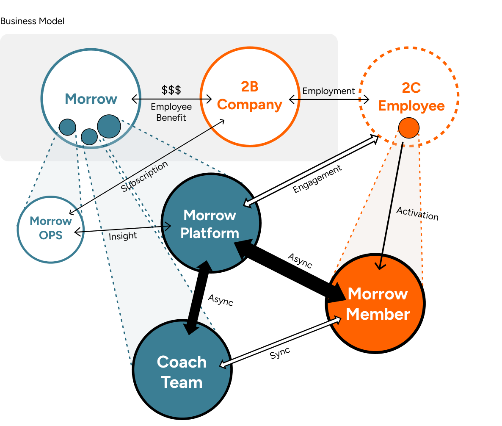
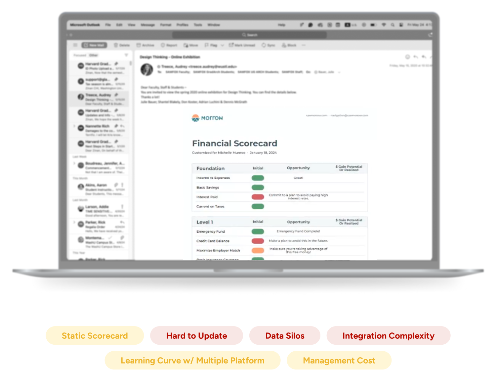
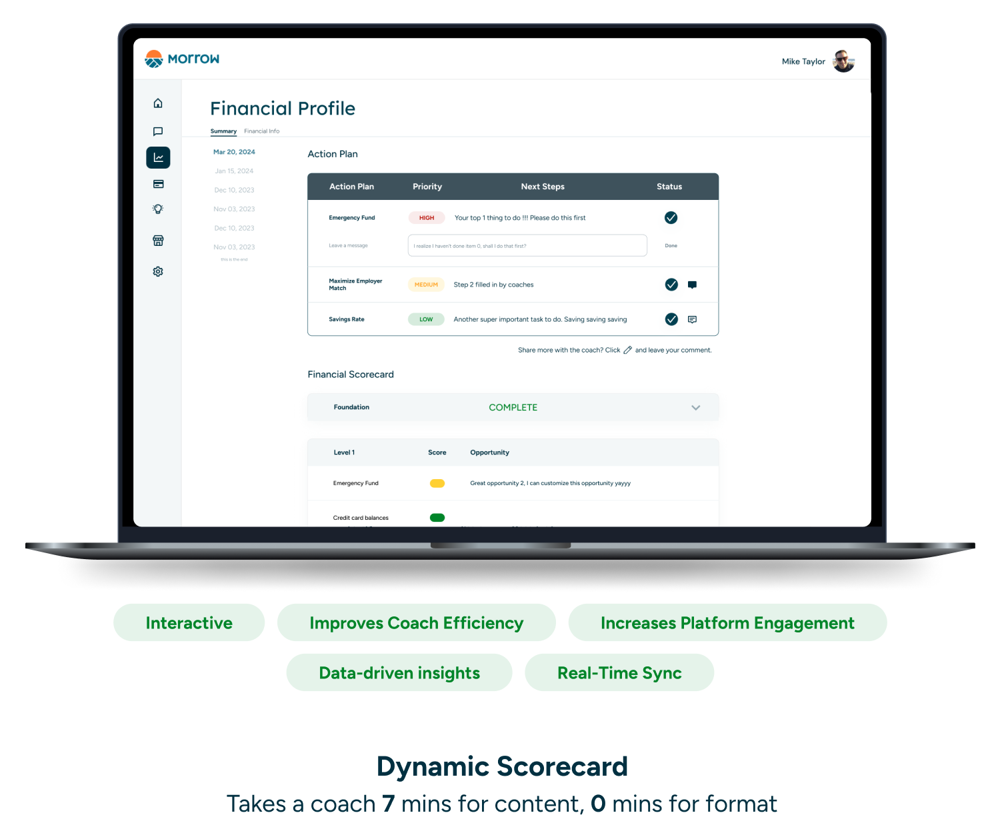
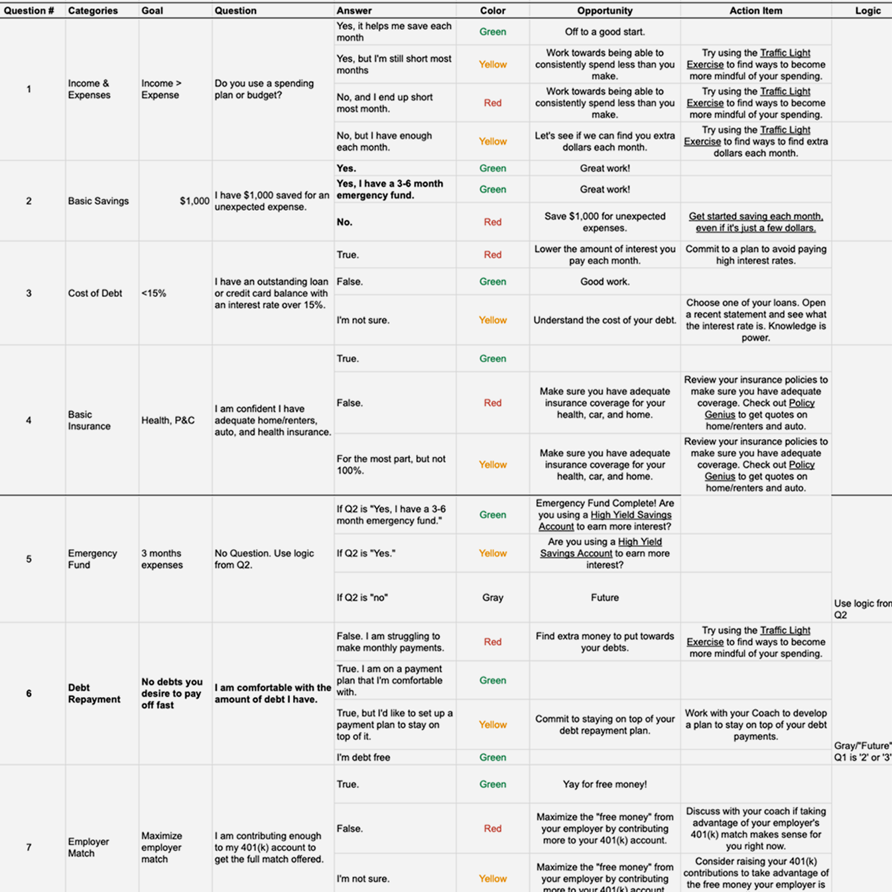
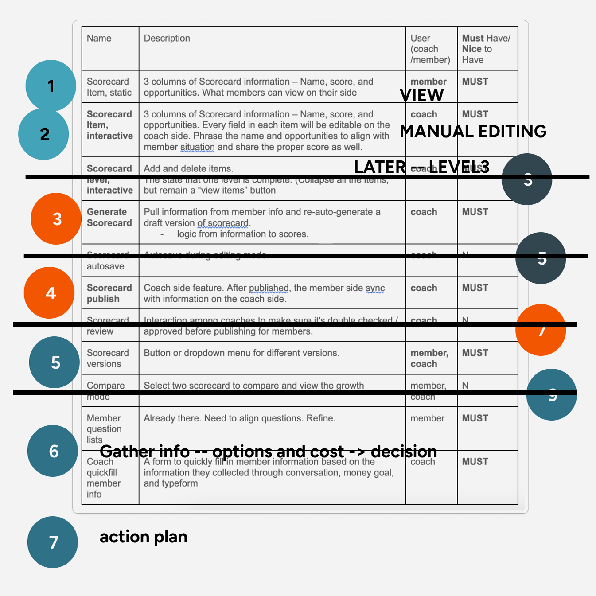
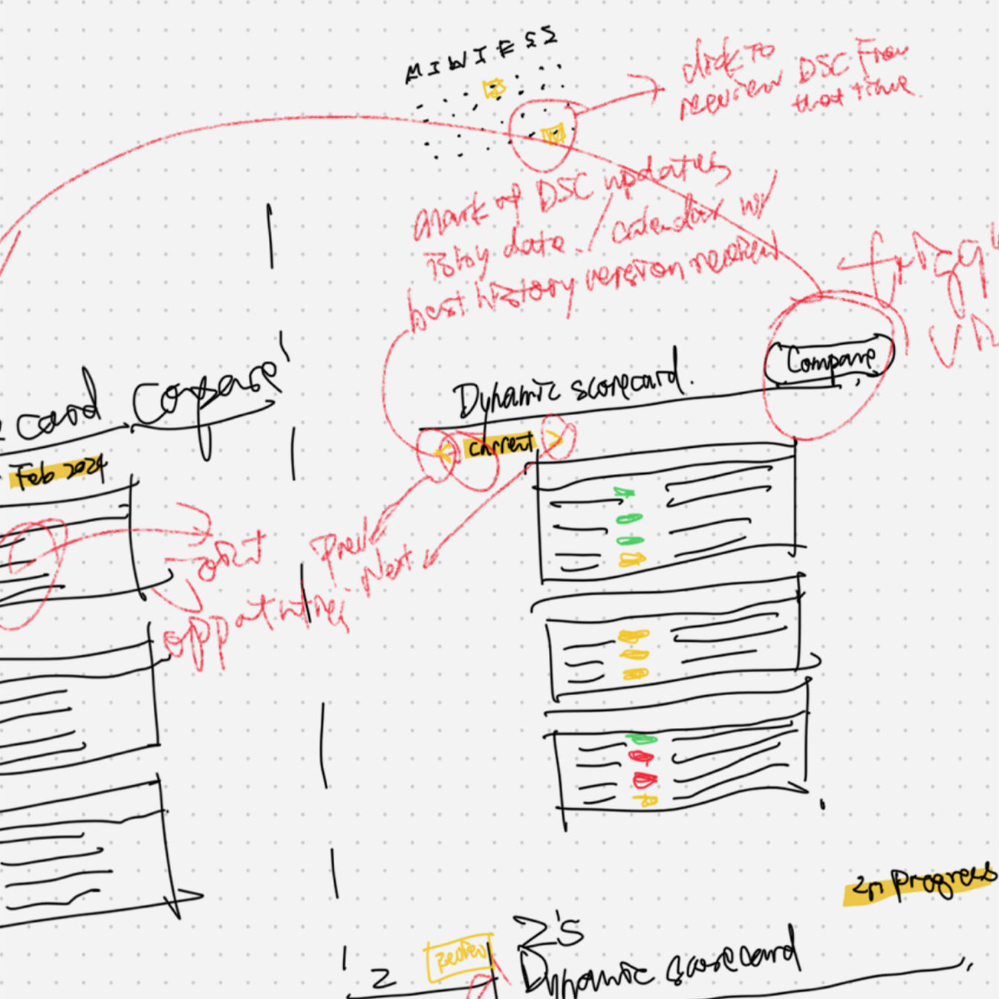

Define and design Morrow's core feature on both
desktop and mobile platforms, unifing the
existing, proven, but fragmented solution,
enhancing user experience while centralizing
knowledge.
Role
Product Manager (early)
Product Designer
Prototyper
Tools
Figma
PRD
Timeline
Jan - Apr, 2024
Context
Morrow - A financial platform built for the American
worker
"Morrow is built for the people that build
America. Make their money work hard for
them."
- Sammy MacFarlane, Morrow CEO.
Morrow provides B2B services to companies as an
employee benefit, supporting their financal and
educational needs. Morrow Coaches and Morrow
Platform further provide sync and
async consultant to empower the employees to
unlock their potential with money. Morrow platform
offers
B2B2C desktop and mobile products designed to
bridge the async communication in a coherent place
to help users identify where money is being left on
the table and capture value through an interactive
action plan.
B2B2C Stakeholder Map

Internally, Morrow Platform facilitates
the
Coaching Team and the
Business Ops Team
For Morrow Members, it centralizes
information for
user engagement and
track their growth.
Morrow Member Profile
Lots of American workers make money but
can't save it. Let your money work for you,
no matter what your financial goals are.
Whether you're
A Soon-To-Be Retiree or
A Frustrated Debtor, see in detail
how Morrow can work for you. Only four steps
are needed: define your money goals, meet
with a financial coach, receive an action
plan, and capture value.
0 to 1 Product
Dynamic Scorecard Bridges the Core Async
Communication.
Currently, the solution spans multiple platforms,
posing
organizational challenges for the coaching
team
and increasing the learning curve. The
process used Typeform, Salesforce, Google Sheets,
and Google Docs. The Scorecard, is then delivered
via email in a PDF format. Although
time-consuming, this process validates the
concept and business model.
To streamline operations, the product team is
integrating the Scorecard feature into the
Morrow Platform. This integration aims to
enhance the Scorecard usability -
boost coach efficiency, centralize member
information, provide valuable data insights, and
drive user engagement.

Existing Solution

Proposed Solution
Product Requirement Document
Define Scope: Sub-Features and Out-of-Scope
At the core of Morrow's offerings is the
Scorecard feature, designed to assess
financial status,
pinpoint opportunities, and offer a
step-by-step action plan. Serving as
a to-do list, progress tracker, and
educational platform, it empowers users to
manage their financial well-being.
To define the problem and solution in the
PRD
, we conducted interviews with the coaching
team. With the current solution , we
understood the underlying logic and
brainstormed solutions for the
biggest challenge in migrating to the Morrow
platform: who inputs what initial member
information and how it is done. Engineers
provided technical reviews to assess
implementation feasibility throughout this
process.
Broadly, we proposed some
Must Have and
Nice to Have features. After a
product team workshop, we agreed on the
sub-features for the Dynamic Scorecard. To
align expectations further, the
Out-of-Scopes include: coach cross-review,
comparisons & trends, more asynchronous
communication options from Members to
Coaches (status, messaging), and additional
outputs (print, save to PDF).

Scorecard Logic Chart

Define Project Scope Workshop

Design Draft
Dynamo Node Design
Dynamic Scorecard Sub-Features and Out-of-Scope
Through coach interview and user research, we
understand the current solution. The product aims to
achieve equal or larger than the current solution.
Morrow leverages its B2B2C model to deliver
financial services to American workers, both
synchronously through coaching sessions and
asynchronously follow-ups. The Scorecard is a core
feature designed to evaluate financial status,
identify opportunities, and provide a step-by-step
actionable plan. It functions as a to-do list, a
progress tracker, and an educational platform,
empowering users to take control of their financial
health..
Scorecard Edit
Coach can edit score and opportunity in the
dynamic scorecard. Autofilled opportunities
automate their process. Dropdown menu
enables editing and coach can double click
into opportunity edits.
Scorecard Collapse
Complete Scorecard is collapsed as a reveal
of success.
Action Plan Interaction
Coachs customize an action plan for Morrow
Members. Members complete an action item and
leave a message for the coaches. It's
dynamic and coach can read and respond to
member messages simultaneously.
History Record
We want to see your growth and celebrate it.
With selection of date, members can see
different versions of scorecard in place,
tracking their improvement record.
Responsive Design
Mobile Prototype -- Reuse Desktop Components
Through coach interview and user research, we
understand the current solution. The product aims to
achieve equal or larger than the current solution.
Morrow leverages its B2B2C model to deliver
financial services to American workers, both
synchronously through coaching sessions and
asynchronously follow-ups. The Scorecard is a core
feature designed to evaluate financial status,
identify opportunities, and provide a step-by-step
actionable plan. It functions as a to-do list, a
progress tracker, and an educational platform,
empowering users to take control of their financial
health..
Financial Scorecard ——
For mobile, horizontally orientated deskstop
elements are horizontally stacked. Using
pattched icon before the level indicator as
a summary for the scorecard. Traffic light
indicators are aligned on the right as a
visual anchor for smaller device.
Action Plan —— For
mobile, horizontally orientated deskstop
elements are horizontally stacked. Using
pattched icon before the level indicator as
a summary for the scorecard. Traffic light
indicators are aligned on the right as a
visual anchor for smaller device.
Complete Items —— For
mobile, horizontally orientated deskstop
elements are horizontally stacked. Using
pattched icon before the level indicator as
a summary for the scorecard. Traffic light
indicators are aligned on the right as a
visual anchor for smaller device.
History Record —— For
mobile, horizontally orientated deskstop
elements are horizontally stacked. Using
pattched icon before the level indicator as
a summary for the scorecard. Traffic light
indicators are aligned on the right as a
visual anchor for smaller device.
Thoughts
End-to-End Product Cycle
Synthesize Information and Define Scope
A start-up environment is characterized by a
fast-paced, highly dynamic working atmosphere
that demands both individual initiative and
independent work. For Dynamic Scorecard, I
conducted interviews with Morrow Business
Operations, Member Engagement, and multiple
Coaches to understand their current stage,
synthesize information, and find solutions to
maximize the collective win. It transforms a
proven business model into a streamlined product
designed to optimize and concentrate user flow.
Through writing the Product Requirement
Document, we break some assumptions like the
Through conversation, it breaks assumptions like
integrat salesforce data into the platform data
Here are some surprising nice to have?
Highly collaborative with Engineer Lead
Dynamo's user community wins it in the
competitive landscape. Community memebers share
their insights and collectively troubleshoot
issues in a creative design field. This robust
and supportive knowledge-based community
significantly simplifies people's lives by
facilitating a more seamless utilization of this
automation tool. What's more important, the
Dynamo Team plays an important role in
supporting the community, including
engaging with users on forum and linkedin
group, host bi-weekly Spirint Demos, and
open to receive feedback from the user
directly.
This experience has inspired me to become a
dedicated advocate within my community, working
relentlessly to advance the forefront of
technology within the design industry.